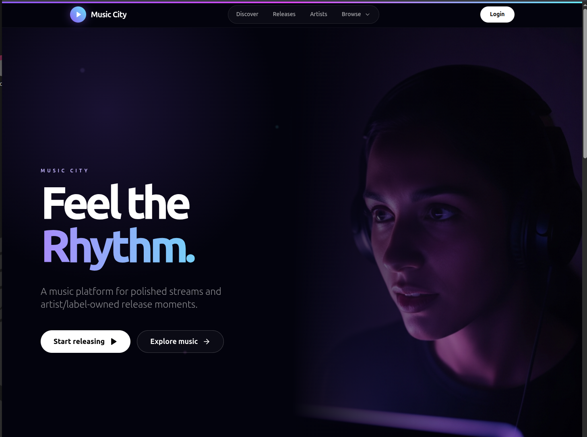
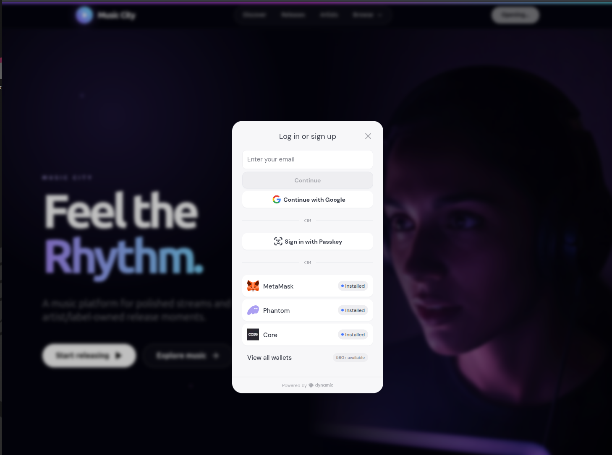
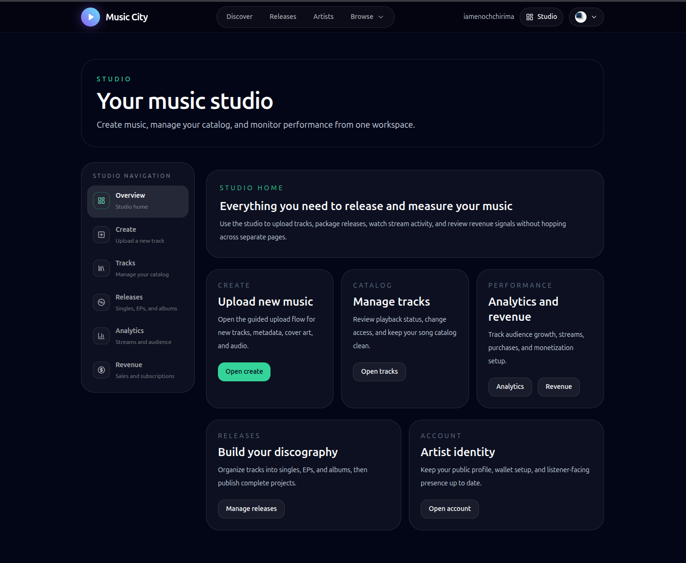
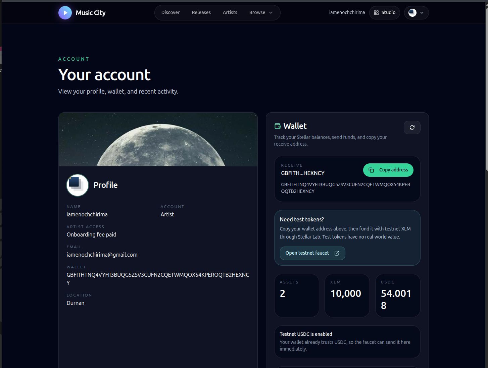
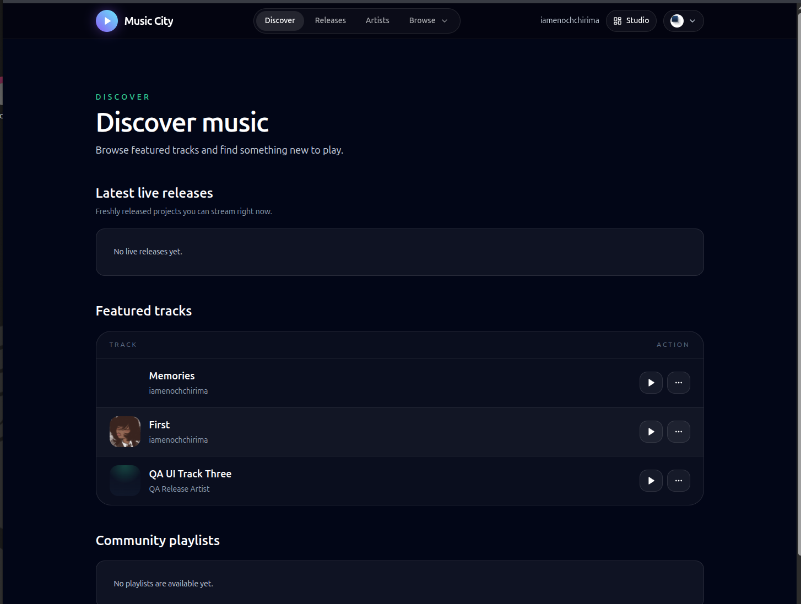
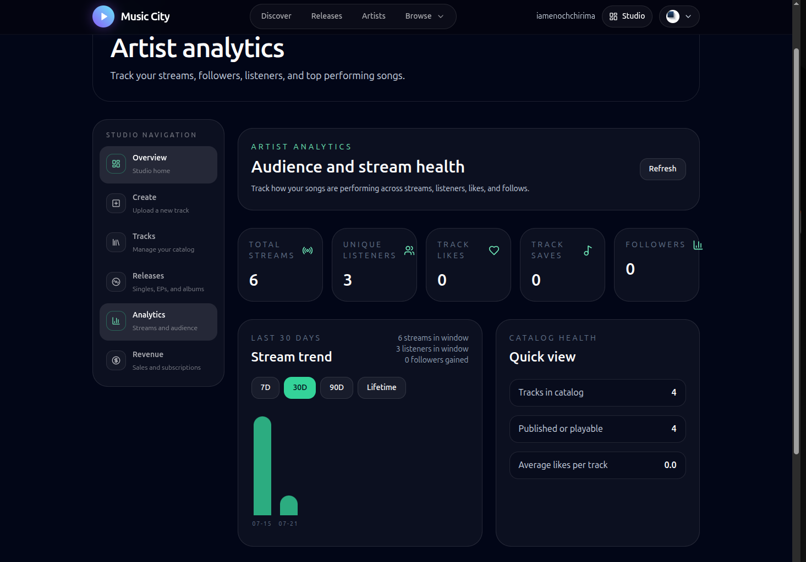

Instawards delivery summary, verification links, and screenshot attachments
| Delivered item | Status |
|---|---|
| Stellar wallet connection and authentication | Delivered |
| Artist onboarding, artist profiles, and track management | Delivered |
| Music upload, media processing, and secure streaming playback | Delivered |
| Listener music catalog, subscription access, and streaming interface | Delivered |
| Subscription access control and qualified-stream tracking | Delivered |
| Royalty splits, royalty ledger, and admin payout controls | Delivered |
| Soroban royalty-split smart contract deployed to Stellar Testnet | Delivered |
| Music City publishing and on-chain verification of royalty splits | Delivered |
| Application and smart-contract test suites | Delivered |
Technical proof for reviewers who wish to verify the Stellar Testnet deployment and an on-chain royalty-split publication.
| Verification item | Address / transaction hash | Link |
|---|---|---|
| Source repository | Music City source code | Open repository |
| Live Music City application | https://music-city.vercel.app/ | Open live application |
| Deployed Soroban contract | CD2ONBXRTTPKFHNOI2BV3UYUZOOC75R5LPUPCLSRDZHUWM5OAQVACNF3 | Open contract |
| Music City treasury address | GCW3HD5EBMVNBGOWCPTP3WNYXXT5OYB2UIMKDNSL3IZRGLVMU4OEKFWO | Open account |
| Contract deployment transaction | c313274db1575c8c018dd2646e4e388e9a2794b0d21f738fbe55fc7e500b75d6 | Open transaction |
Music City live application: https://music-city.vercel.app/





